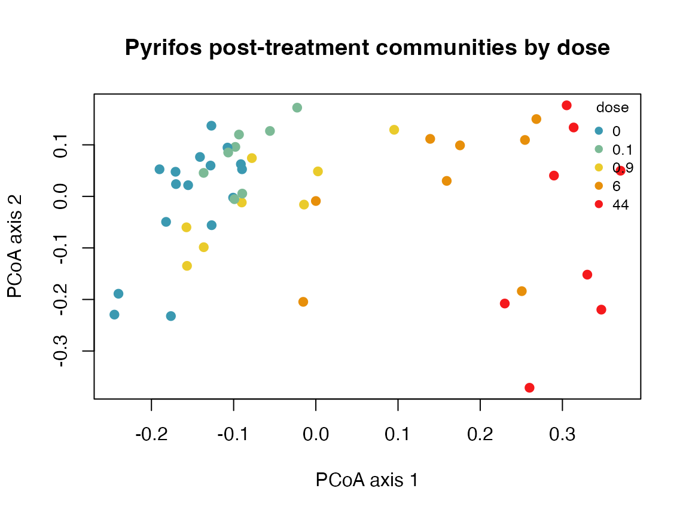

balanced-mixed.RmdWhen treatment is applied to an experimental unit that is then
sub-sampled, the unit – not the observation – is exchangeable, and the
correct denominator is the between-unit variation. This vignette covers
the balanced designs for which distmer derives an
exact expected-mean-square (EMS) denominator: a single
random intercept, a nested hierarchy, a randomized block, and a
crossed–nested hybrid.
The vegan::pyrifos data record aquatic-invertebrate
communities from 12 ditches sampled repeatedly. Dose was assigned to
ditches, so a ditch is the whole plot. We take a balanced
post-treatment window of four dates per ditch.
data(pyrifos, package = "vegan")
ditch <- gl(12, 1, length = 132)
week <- factor(rep(c(-4, -1, 0.1, 1, 2, 4, 8, 12, 15, 19, 24), each = 12))
dose <- factor(rep(c(0.1, 0, 0, 0.9, 0, 44, 6, 0.1, 44, 0.9, 0, 6), 11))
keep <- week %in% c(1, 2, 4, 8)
pyrifos_env <- data.frame(
ditch = droplevels(ditch[keep]),
dose = droplevels(dose[keep])
)
bray <- vegdist(pyrifos[keep, ], method = "bray")
pcoa <- cmdscale(bray, k = 2)
dose_cols <- hcl.colors(nlevels(pyrifos_env$dose), "Zissou 1")
plot(pcoa, pch = 19, col = dose_cols[pyrifos_env$dose],
xlab = "PCoA axis 1", ylab = "PCoA axis 2",
main = "Pyrifos post-treatment communities by dose")
legend("topright", legend = levels(pyrifos_env$dose), title = "dose",
col = dose_cols, pch = 19, bty = "n", cex = 0.8)
Dose is constant within each ditch and every ditch has four
observations, so the balanced random-intercept engine derives an exact
denominator. The numerator and whole-plot residual both contain
sigma_e^2 + m sigma_ditch^2 under the null (m
= observations per ditch).
fit <- permanova(bray ~ dose + (1 | ditch), pyrifos_env, permutations = 199, seed = 1)
fit
#> Distance-based PERMANOVA
#> Engine: balanced random intercept
#>
#> Factors
#> Name Type Levels
#> dose Fixed 5
#> ditch Random, main 12
#>
#> PERMANOVA table of results
#> Source df SS MS Pseudo-F P(perm) P(MC) Unique perms
#> dose 4 1.895 0.474 3.4676 0.0050 0.0001 199
#> ditch within fixed model 7 0.956 0.137
#> Within ditch 36 2.238 0.062
#> Total 47 5.089permanova() routes this to the balanced random-intercept
engine (shown in the header and in fit$engine); the
Denominators block reports the exact whole-plot mean
square used for dose.
Residuals are permuted as intact ditch blocks. A model with
week as a fixed effect varies within ditch and is
outside this envelope, so it fails rather than reusing the whole-plot
scheme – a within-ditch time question needs a supported time or
random-slope structure (vignette("random-slopes")).
permanova_nested() extends the exact construction to a
/-generated containment chain such as
(1 | region/site), and assigns each fixed term to the one
hierarchy stratum its projector belongs to. We simulate a balanced
region/site/quadrat restoration experiment (the standard
vegan datasets do not encode one).
sampling <- expand.grid(quadrat = factor(1:3), site = factor(1:2),
region = factor(1:8))
sampling$treatment <- factor(ifelse(as.integer(sampling$region) <= 4,
"reference", "restored"))
sampling$substrate <- factor(ifelse(sampling$site == "1", "natural", "enhanced"))
sampling$microhabitat <- sampling$quadrat
set.seed(1)
species <- 12
nested_site <- interaction(sampling$region, sampling$site, drop = TRUE)
linear <- matrix(log(seq(2.5, 7, length.out = species)),
nrow(sampling), species, byrow = TRUE) +
matrix(rnorm(8 * species, sd = .25), 8, species)[sampling$region, ] +
matrix(rnorm(16 * species, sd = .18), 16, species)[nested_site, ] +
outer(as.numeric(sampling$treatment == "restored"),
c(rep(.3, species/2), rep(-.15, species/2))) +
outer(as.numeric(sampling$substrate == "enhanced"),
c(rep(-.1, species/2), rep(.2, species/2)))
community <- matrix(rpois(length(linear), exp(linear)), nrow(sampling), species)
nested_bray <- vegdist(community, method = "bray")The slash records containment provenance; each term is then tested at its level, with descendants moving intact.
nested_fit <- permanova(
nested_bray ~ treatment + substrate + microhabitat + (1 | region/site),
sampling, permutations = 99, seed = 1, truncate = TRUE
)
nested_fit$table
#> Source df SS MS Pseudo-F
#> 1 treatment 1 0.13286084 0.13286084 1.527130
#> 2 substrate 1 0.16156396 0.16156396 3.245228
#> 3 microhabitat 2 0.06498905 0.03249452 1.059619
#> 4 region within fixed model 6 0.52200217 0.08700036 NA
#> 5 region:site within region and fixed model 7 0.34849561 0.04978509 NA
#> 6 Within region:site after fixed model 30 0.91998681 0.03066623 NA
#> 7 Total 47 2.14989844 NA NA
#> P(perm) P(MC) Unique perms
#> 1 0.25 0.1788 99
#> 2 0.01 0.0077 99
#> 3 0.36 0.3854 99
#> 4 NA NA NA
#> 5 NA NA NA
#> 6 NA NA NA
#> 7 NA NA NA
nested_fit$fit$assignment_levels
#> treatment substrate microhabitat
#> "region" "region:site" "observation"Region terms move whole regions, substrate moves sites within regions, and microhabitat moves quadrats within sites. Unrestricted variance components are the primary estimates; a negative value is retained (method-of-moments sampling variation) and the zero-truncated vector is a separate sensitivity result.
nested_fit$fit$variance_components$unrestricted
#> residual region region:site
#> 0.030666227 0.006202546 0.006372953Cross-level interactions need each main-effect
projector to be orthogonal to its interaction, which R’s default
treatment contrasts do not provide. The permanova() front
door sets sum-to-zero contrasts on the fixed factors automatically, so
~ treatment * substrate is tested directly:
permanova(nested_bray ~ treatment * substrate + (1 | region/site),
sampling, permutations = 0)$fit$assignment_levels
#> treatment substrate treatment:substrate
#> "region" "region:site" "region:site"(When you call an engine directly on a compiled design, contrasts are
never changed for you – doing so would change the hypothesis your
formula expresses – so you must assign contr.sum yourself.
The front door does it for you.)
When a fixed treatment is randomized within blocks, its denominator
is the treatment:block interaction, which must be declared.
permanova_crossed() with
p_method = "permutation" permutes complete replicated cells
among treatment positions within each block.
blk <- expand.grid(quadrat = factor(1:3), treatment = factor(c("reference", "restored")),
block = factor(1:8))
cell <- interaction(blk$treatment, blk$block, drop = TRUE)
set.seed(1)
lin <- matrix(log(seq(3, 8, length.out = species)), nrow(blk), species, byrow = TRUE) +
matrix(rnorm(8 * species, sd = .2), 8, species)[blk$block, ] +
matrix(rnorm(16 * species, sd = .3), 16, species)[cell, ] +
outer(as.numeric(blk$treatment == "restored"),
c(rep(.25, species/2), rep(-.1, species/2)))
blk_comm <- matrix(rpois(length(lin), exp(lin)), nrow(blk), species)
blk_bray <- vegdist(blk_comm, method = "bray")
blk_fit <- permanova(
blk_bray ~ treatment + (1 | block) + (1 | treatment:block),
blk, permutations = "all", seed = 1
)
blk_fit$table
#> Source df SS MS Pseudo-F P(perm) P(MC) Unique perms
#> 1 treatment 1 0.1000103 0.1000103 1.325256 0.2109375 NA 256
blk_fit$fit$tests$treatment[c("attainable_permutations", "permutation_algorithm")]
#> $attainable_permutations
#> [1] 256
#>
#> $permutation_algorithm
#> [1] "raw permutation of intact `treatment:block` cells within `block`"The front door routes a treatment crossed with a random block to the crossed engine and uses its within-block permutation path automatically.
With two treatments in eight blocks the exact space is
2^8 = 256. The empirical p-value uses the retained Gower
matrix directly, so it remains valid when the Bray–Curtis spectrum is
non-Euclidean. Omitting (1 | treatment:block) removes the
variance component the denominator needs, and is rejected.
permanova_hybrid() handles a treatment crossed with
regions while sites are nested within regions, with both treatment
interactions declared. The treatment numerator and
treatment:region denominator share the same null EMS.
hy <- expand.grid(replicate = factor(1:2), treatment = factor(c("reference", "restored")),
site = factor(1:2), region = factor(1:4))
rs <- interaction(hy$region, hy$site, drop = TRUE)
tr <- interaction(hy$treatment, hy$region, drop = TRUE)
ts <- interaction(hy$treatment, hy$region, hy$site, drop = TRUE)
set.seed(1)
lh <- matrix(log(seq(3, 7, length.out = species)), nrow(hy), species, byrow = TRUE) +
matrix(rnorm(4 * species, sd = .25), 4, species)[hy$region, ] +
matrix(rnorm(8 * species, sd = .18), 8, species)[rs, ] +
matrix(rnorm(8 * species, sd = .2), 8, species)[tr, ] +
outer(as.numeric(hy$treatment == "restored"),
c(rep(.18, species/2), rep(-.08, species/2)))
hy_comm <- matrix(rpois(length(lh), exp(lh)), nrow(hy), species)
hy_bray <- vegdist(hy_comm, method = "bray")
permanova(
hy_bray ~ treatment + (1 | region/site) + (1 | treatment:region) +
(1 | treatment:region:site),
hy, permutations = "all", truncate = TRUE
)$table
#> Warning: Only 16 treatment-profile permutations are attainable; interpret
#> p-values cautiously.
#> Source df SS MS Pseudo-F P(perm) P(MC)
#> 1 treatment 1 0.1072252 0.10722524 1.974891 0.125 NA
#> 2 region 3 0.4570743 0.15235810 NA NA NA
#> 3 site within region 4 0.1933021 0.04832552 NA NA NA
#> 4 treatment:region 3 0.1628828 0.05429426 NA NA NA
#> 5 treatment:site within region 4 0.1369126 0.03422816 NA NA NA
#> 6 Residual 16 0.4615817 0.02884886 NA NA NA
#> 7 Total 31 1.5189787 NA NA NA NA
#> Unique perms
#> 1 16
#> 2 NA
#> 3 NA
#> 4 NA
#> 5 NA
#> 6 NA
#> 7 NAComplete treatment-by-region profiles (both sites and all replicates)
permute intact within region, giving (2!)^4 = 16
arrangements. Omitting the treatment:region component
removes the exact denominator and is rejected.
Each of these engines refuses imbalance, incomplete cells, extra
factors, and undeclared covariance components rather than approximating
them. For genuinely unbalanced versions of these layouts, see
vignette("unbalanced-mixed").